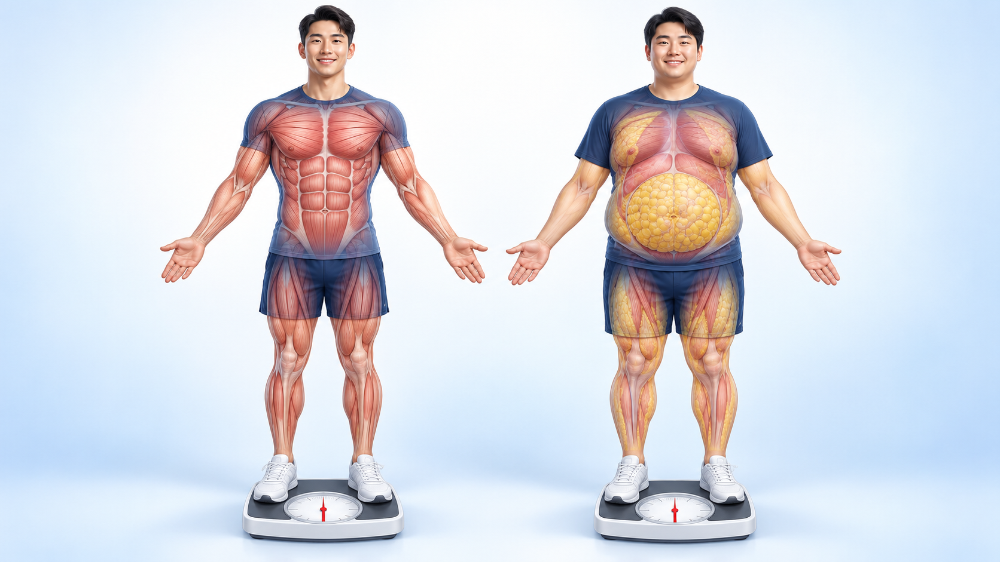
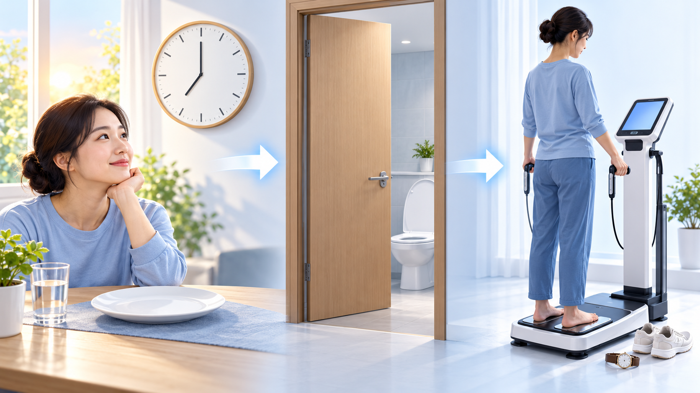

같은 번호를 결과지에서 찾아보세요.
② 골격근량 · 체지방량근육과 지방이 얼마나 있는지
③ 체지방률몸무게 중 지방이 차지하는 비율
⑩ 내장지방배 속 지방의 추정 레벨
⑤ 지난번과 비교체중·근육·지방이 어떻게 변했는지
몸무게가 같아도 근육과 지방의 비율은 다를 수 있습니다.

골격근량과 체지방량을 함께 보세요.
체중이 높다고 지방이 많거나,
체중이 낮다고 지방이 적은 것은 아닙니다.
기준 범위는 성별에 따라 다릅니다. 결과지의 표준 범위 막대를 보세요.
신호등은 설명용입니다. 실제 판정은 본인 결과지의 표준 범위를 따릅니다.
결과지에는 내장지방의 양을 추정한 ‘레벨’로 표시됩니다.
실측이 이 값 이상이면 한국 성인의 복부비만 기준입니다.
레벨 하나로 질환이나 위험을 판단하지 않습니다.
근육을 지키며 지방을 줄이는 것이 중요합니다.
가상 예시입니다. 본인의 막대를 확인하세요.
몸을 움직이는 근육의 양
손으로 쥐는 힘
근육이 줄면 기초대사량도 낮아질 수 있습니다.
체형 그래프에서 BMI와 체지방률의 관계를 함께 살펴보세요.
내 위치는 결과지의 체형 그래프 점으로 확인합니다.
지금 결과지 양식에는 체형 그래프가 없을 수 있습니다.
식사·운동·수분 상태가 달라지면 결과가 흔들릴 수 있습니다.

같은 조건에서 측정한 지난 결과와 비교합니다. 아래 값은 모두 가상 예시입니다.
| 항목 | 이전 → 다음 |
|---|---|
| 체중 | 76 → 73kg ↓ |
| 골격근량 | 28 → 28kg → |
| 체지방량 | 24 → 21kg ↓ |
지방이 줄고 근육은 유지되는지 봅니다.
골격근량도 줄었다면 조건·식사·운동을 진료에서 확인합니다.
다음에도 같은 조건으로 측정하고 지난 결과와 비교해 보세요.